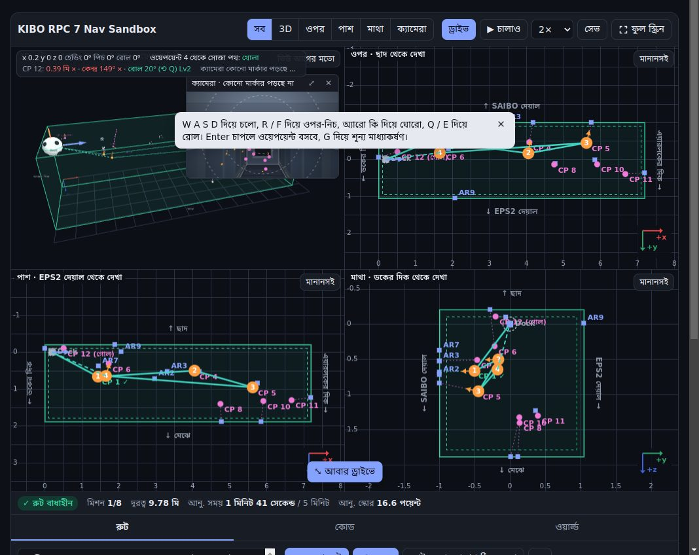
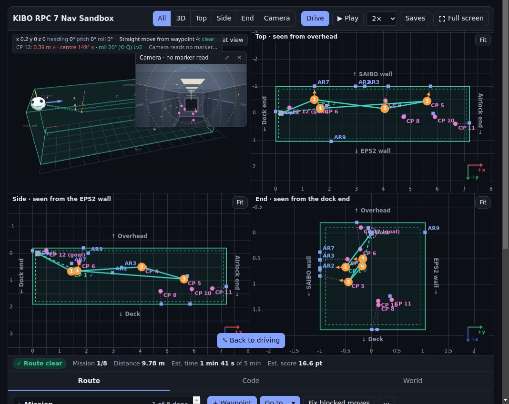

স্যান্ডবক্স যেভাবে ব্যবহার করবে
এই পাতা সম্পর্কেশেখার পথ · নতুন শব্দ · সূচিপত্র
স্যান্ডবক্সে ৭ম Kibo-RPC (Int-Ball2) মিশন কীভাবে সাজাবে আর ওড়াবে: প্রথমবার চারপাশটা দেখা থেকে শুরু করে সিমুলেটরের জন্য কোড কপি করা পর্যন্ত। স্যান্ডবক্স তোমাকে ঠিক দিকে এগিয়ে দেবে; শেষ কথা বলবে অফিশিয়াল সিমুলেটর।
- স্যান্ডবক্স
- খেলার মাঠের বালির বাক্সের মতো একটা জায়গা, যেখানে ভয় ছাড়া যা খুশি চেষ্টা করা যায়। এখানে মানে এই সাইটের অনুশীলনের টুলটা।
- ওয়েপয়েন্ট
- রুটের একেকটা থামার জায়গা, বাসের স্টপেজের মতো। রোবট একটার পর একটা ওয়েপয়েন্টে যায়।
- রুট
- ওয়েপয়েন্টগুলো পরপর সাজালে যে পথ হয়।
- কিপ-ইন জোন
- যে জায়গার ভেতরে রোবটকে থাকতেই হবে (সবুজ বাক্স)।
- কিপ-আউট জোন
- যেখানে রোবট ঢুকতে পারবে না (লাল বাক্স)।
- পোজ
- অবস্থান আর দিক একসঙ্গে: রোবট কোথায়, আর কোন দিকে মুখ করে।
শুরুর আগে: স্ক্রিনের কোন অংশ কী
স্যান্ডবক্স খুললে প্রথমে এরকম দেখাবে। নম্বরগুলো মিলিয়ে নিচের তালিকা পড়ো।

- ভিউ বোতাম: কোন দৃশ্য দেখবে (সব, 3D, ওপর, পাশ, মাথা, ক্যামেরা)।
- ড্রাইভ: নিজে হাতে রোবট চালাও।
- ▶ চালাও: তোমার রুট ধরে রোবট নিজে নিজে ওড়ে।
- ওপরের লেখা: রোবট কোথায়, কোন দিকে মুখ করে, আর কাছের চেকপয়েন্ট কোন লেভেলে।
- রোবটের ক্যামেরা: রোবট এখন যা দেখছে।
- 3D ভিউ: পুরো Kibo, রোবট আর তোমার রুট।
- লগ: কী কী ঘটল, ছোট করে লেখা থাকে।
- চালানোর কন্ট্রোল: কিবোর্ডের কি আর বোতাম (ফোনে জয়স্টিক)।
- স্ট্যাটাস বার: রুট খোলা কি না, দূরত্ব, সময় আর আনুমানিক স্কোর।
- ট্যাব: রুট (ওয়েপয়েন্টের তালিকা), কোড আর ওয়ার্ল্ড।
- মিশনের তালিকা: প্রতিটা চেকপয়েন্টে এখনো কী বাকি।
১. শুরু করা
- চারপাশটা দেখে নাও। সবুজ বাক্সটা কিপ-ইন জোন: রোবটকে এর ভেতরেই থাকতে হবে। নীল চৌকোগুলো AR মার্কার, আর ছোট গোলাপি বিন্দুগুলো চেকপয়েন্ট। প্রতিটা চেকপয়েন্ট থেকে তার মার্কার পর্যন্ত একটা ড্যাশ দেওয়া রেখা আছে, আর একটা কমলা কাঠি দেখায় সেখানে রোবটের ওপরের দিকটা কোন দিকে রাখতে হবে।
- রুট ট্যাবের মিশনের তালিকাটা পড়ো। সেখানে সব চেকপয়েন্ট আছে, সবশেষে গোল, আর প্রতিটায় এখনো কী ভুল আছে, তাও লেখা থাকে।
- চার ওয়েপয়েন্টের শুরুর রুট থেকে শুরু করো। ওয়েপয়েন্ট ১ একটা করে দেখানো উদাহরণ, যেটা CP 1 পার হয়। পরের তিনটা কাঁচা খসড়া, ইচ্ছে করেই একটু ভুল রাখা। রোবট কীভাবে সেগুলোতে যায় আর প্রতিটা AR মার্কার পড়ে, দেখতে ▶ চালাও চাপো; তারপর খসড়াগুলো ঠিক করো আর বাকিটা নিজে সাজাও। ⋯ মেনুর শুরুর উদাহরণ রুট আনো চাপলে রুটটা আবার ফিরে আসে।
প্রথম দশ মিনিট: ধাপে ধাপে
- ওপরের 3D বোতাম চাপো। মাউস দিয়ে টেনে (ফোনে আঙুল দিয়ে) মডিউলটা ঘুরিয়ে দেখো: সবুজ বাক্স, নীল মার্কার আর গোলাপি চেকপয়েন্টগুলো খুঁজে বের করো।
- ▶ চালাও চাপো। রোবট শুরুর রুট ধরে ওড়ে; প্রতিটা ওয়েপয়েন্টে থেমে মার্কার পড়ে। লগে কী লেখা আসছে, খেয়াল করো।
- ✕ বের হও চেপে ফিরে এসো। নিচের মিশনের তালিকায় দেখো, কোন চেকপয়েন্টে কী ভুল আছে।
- মিশনের তালিকা যা বলছে, সেই অনুযায়ী একটা কাঁচা ওয়েপয়েন্ট ঠিক করো: তালিকার x, y, z ঘরে সংখ্যা একটু বদলাও, বা দিকের মেনুতে “টার্গেটের দিকে মুখ” বাছো। মিশনের তালিকায় লেভেল বদলাল কি না দেখো।
- সব চেকপয়েন্ট পার হলে কোড ট্যাবে গিয়ে কোড কপি করো। অভিনন্দন, প্রথম রুট তৈরি!
২. ভিউগুলো
ওপরের বোতামগুলো দিয়ে ভিউ বেছে নাও: সব, 3D, ওপর, পাশ, মাথা আর ক্যামেরা।
- 3D পুরো মডিউলটা লম্বা দিকের পাশ থেকে দেখায়: বাঁয়ে ডকের দিক, ডানে এয়ারলকের দিক, ওপরে ছাদ। মাউসে টেনে ঘোরাও, আর স্ক্রল করলে পয়েন্টারের দিকে জুম হবে। টাচ স্ক্রিনে এক আঙুলে টেনে ঘোরাও, দুই আঙুলে চিমটি কেটে আঙুলের দিকে জুম করো, দুই আঙুলে টেনে সরাও, আর দুবার ট্যাপ করলে আগের মতো হয়ে যাবে। ফোন খাড়া করে ধরলে (ফুল স্ক্রিন ছাড়া) ওপরে-নিচে টানলে পাতা যথারীতি স্ক্রল হয়, আর পাশাপাশি টানলে ভিউ ঘোরে; মডিউলটাকে তার লম্বা অক্ষ (এয়ারলক থেকে ডক) বরাবর রোল করাতে 3D ভিউয়ের বাঁ কিনারের ⟲ রোল চাকাটা ওপরে-নিচে টানো। (আঙুল ওপরে-নিচে নড়লেই ফোন পাতা স্ক্রল করতে শুরু করে, তাই রোলের জন্য আলাদা চাকা।) ভিউ আগের মতো চাপলে সব ভিউ শুরুর অবস্থায় ফেরে: 3D-র কোণ, ওপর, পাশ আর মাথার ফ্রেম, ক্যামেরার ছবি আর ছোট ক্যামেরা জানালা।
- ওপর হলো ছাদ থেকে দেখা, পাশ হলো লম্বা দিকের পাশ থেকে, আর মাথা হলো ডকের দিক থেকে মডিউলের ভেতর বরাবর তাকানো। প্রতিটা ভিউয়ের চারপাশের লেখাগুলো দেয়ালের নাম বলে (ডকের দিক, এয়ারলকের দিক, SAIBO দেয়াল, EPS2 দেয়াল, ছাদ, মেঝে), আর কোণের ছোট তীরগুলো দেখায় x, y আর z কোন দিকে বাড়ে।
- ক্যামেরা দেখায় রোবটের ক্যামেরা কী দেখছে। ৬ নম্বর অংশ দেখো।
- 3D-তে ওপরের ডান কোণে একটা ছোট ক্যামেরা জানালা থাকে: বাছাই করা ওয়েপয়েন্ট থেকে ক্যামেরা কী দেখে, সেটা দেখায়। ⤢ চাপলে সেটা বড় হয়ে পুরো জায়গা জুড়ে বসে; ফিরতে ⤡ ফিরে যাও চাপো।
৩. মিশন আর স্কোর
সব চেকপয়েন্ট পার হও, তারপর গোল চেকপয়েন্টে গিয়ে শেষ করো, সব মিলিয়ে ৫ মিনিটের মধ্যে। প্রতিটা চেকপয়েন্টের বিচার হয় তিনটা জিনিস দেখে, আর তিনটার মধ্যে যেটা সবচেয়ে কম, সেটাই তার লেভেল (Lv1 থেকে Lv3):
| যা দেখা হয় | Lv3 | Lv2 | Lv1 |
|---|---|---|---|
| অবস্থান: চেকপয়েন্ট থেকে দূরত্ব | ০.১ মি | ০.২ মি | ০.৩ মি |
| কেন্দ্রে রাখা: ক্যামেরার ছবির মাঝখান থেকে AR মার্কার কতটা সরে আছে | ১০° | ২০° | ৩০° |
| রোল: চেকপয়েন্টের তুলনায় রোবট ক্যামেরার অক্ষ বরাবর কতটা ঘুরে আছে | ১০° | ২০° | ৩০° |
- মিশনের তালিকার মাথায় লেভেল দিয়ে কঠিনতা ঠিক হয়: সহজ (৬টা চেকপয়েন্ট), মাঝারি (৮), কঠিন (১০) বা খুব কঠিন (১২)। একটা বাছলেই এলোমেলো নতুন লেআউট তৈরি হয়; নতুন লেআউট একই লেভেলে আরেকটা বানায়। নিচের লাইনে লেখা থাকে এই রানে কোন কোন AR মার্কারের কোনো চেকপয়েন্ট নেই: আসল খেলায় ৬ থেকে ১২টা চেকপয়েন্ট থাকে, তাই কিছু মার্কার সবসময় বাদ পড়ে। কোন লেভেলে কয়টা চেকপয়েন্ট, নিয়মে তা বলা নেই, তাই এই সংখ্যাগুলো অনুমান।
- পরের লেভেলে উঠতে কী বদলাতে হবে, আর কোন রোল বোতাম (⟲ না ⟳) চাপতে হবে, মিশনের তালিকা তা বলে দেয়।
- গোলকেই হতে হবে তোমার পার হওয়া শেষ চেকপয়েন্ট। ৫ মিনিটের সীমা পেরোনোর পরে পার হলে তা গোনা হয় না।
- আনুমানিক স্কোর = (চেকপয়েন্টের পয়েন্ট + গোলের পয়েন্ট) × সময়ের বোনাস। এটা মোটামুটি হিসাব: সিমুলেটরের সময় আর বাধাবিঘ্ন আলাদা হয়।
৪. ওয়েপয়েন্ট
- যোগ করো + ওয়েপয়েন্ট চেপে, ওপর, পাশ বা মাথার ভিউতে ডাবল-ক্লিক (বা দুবার ট্যাপ) করে, অথবা রোবট চালিয়ে সেখানে নিয়ে গিয়ে (৫ নম্বর অংশ)। যাও… কোনো চেকপয়েন্টের কাছে একটা কাঁচা পোজ বসায়, তুমি সেটা ঠিক করে নেবে।
- ওপর, পাশ বা মাথার ভিউতে টেনে, অথবা x, y আর z লিখে ওয়েপয়েন্ট সরাও। পয়েন্টারের নিচের লেখায় স্থানাঙ্ক দেখা যায়, আর জায়গাটায় যাওয়া যায় কি না, তাও।
- দিকের মেনু দিয়ে ওয়েপয়েন্টের মুখ ঠিক করো: আগের দিকই রাখো, যাওয়ার দিকে মুখ, টার্গেটের দিকে মুখ (একটা AR মার্কারের দিকে), অথবা নিজের কোয়াটারনিয়ন লিখে দাও। প্রতিটা ওয়েপয়েন্টের নিচে তার হেডিং, পিচ আর রোল দেখা যায়।
- লাল পথ মানে পথটা কিপ-ইন জোনের বাইরে যায় বা কোনো কিপ-আউট জোনে ঢুকে পড়ে; X চিহ্ন দেখায় ঠিক কোথায়। কারণ জানতে ইঙ্গিত চাপো, তারপর ওয়েপয়েন্ট সরাও বা নতুন বসাও। ঘুরে যাওয়ার পথ বানাও আর আটকে যাওয়া পথ ঠিক করো নিজেরাই মাঝপথে পয়েন্ট বসিয়ে দেয়।
- ক্রম বদলাতে ↑ ↓, আর মুছতে ✕ চাপো। আগের অবস্থায় ফেরো (আনডু) আছে ⋯ মেনুতে, নয়তো Ctrl+Z।
একটা পথ লাল দেখাচ্ছে। এর মানে কী, আর কী করবে?
পথটা কিপ-ইন জোনের বাইরে যায় বা কোনো কিপ-আউট জোনে ঢোকে। ইঙ্গিত চেপে কারণ দেখো, তারপর মাঝে একটা ওয়েপয়েন্ট বসাও বা ঘুরে যাওয়ার পথ বানাও চাপো।
মিশনের তালিকায় একটা চেকপয়েন্ট বলছে “রোল মিলছে না”। কোন বোতাম কাজে লাগবে?
রোলের বোতাম ⟲ বা ⟳ (কিবোর্ডে Q বা E); তালিকাই বলে দেয় কোনটা।
৫. রোবট চালানো
স্যান্ডবক্স খোলে ড্রাইভ মোডে, তাই শুরু থেকেই হাতে রোবট চালাতে পারবে (▶ চালাও চাপলে ড্রাইভ থেকে বেরিয়ে যাবে, ড্রাইভ চাপলে আবার ফিরবে; ড্রাইভের মধ্যে ড্রাইভ চাপলেও ড্রাইভেই থাকবে)। আগে স্যান্ডবক্সের ভেতরে একবার ট্যাপ বা ক্লিক করো: তার আগে কিবোর্ড চাপলে পাতাই স্ক্রল হতে থাকবে। বাঁয়ে রোবটের ক্যামেরা আর ডানে 3D ভিউ দেখা যায় (ফোন খাড়া করে ধরলে ক্যামেরা ওপরে)। রোবট যেভাবেই উল্টে থাকুক, কন্ট্রোল চলে ক্যামেরার ছবি অনুযায়ী।
| যা করতে চাও | কিবোর্ড | ফোন |
|---|---|---|
| সামনে / পেছনে যাও | W S | বাঁ স্টিক ওপরে / নিচে |
| বাঁয়ে / ডানে সরো | A D | বাঁ স্টিক বাঁয়ে / ডানে |
| ছবিতে ওপরে / নিচে যাও | R F | ▲ ▼ |
| বাঁয়ে / ডানে ঘোরো | ← → | ডান স্টিক বাঁয়ে / ডানে |
| ওপরে / নিচে তাকাও | ↑ ↓ | ডান স্টিক ওপরে / নিচে |
| ছবিটা ঘড়ির কাঁটার উল্টো দিকে / দিকে রোল করো | Q E | ⟲ ⟳ |
| সূক্ষ্ম নিয়ন্ত্রণ (ধীরে) | Shift চেপে রাখো | ধীরে |
| শূন্য মাধ্যাকর্ষণ চালু / বন্ধ | G | Zero-g সুইচ |
| ভেসে চলা আর ঘোরা থামাও (শূন্য মাধ্যাকর্ষণে) | X | থামো |
| এখানে ওয়েপয়েন্ট বসাও | Enter | ওয়েপয়েন্ট বসাও |
| বাছাই করা ওয়েপয়েন্ট এখানে আনো | U | এখানে আনো |
| যেখান থেকে শুরু করেছিলে, সোজা হয়ে সেখানে ফেরো | H | শুরুতে ফেরো |
শূন্য মাধ্যাকর্ষণ (শুরুতে ফেরো-র পাশের Zero-g সুইচ, বা G; প্রতিবার ড্রাইভ শুরু হলে বন্ধ থাকে) চালু করলে রোবট ঠিক স্টেশনে যেভাবে চলে, সেভাবে ওড়ে: কন্ট্রোল চাপলে থ্রাস্টার জ্বলে, আর ছেড়ে দিলেও রোবট ভেসে চলতে আর ঘুরতে থাকে। ভেসে চলার গতি খুব ধীরে কমে (মোটামুটি ২০ সেকেন্ডে অর্ধেক), তাই উল্টো দিকে থ্রাস্ট না দেওয়া, থামো না চাপা বা দেয়ালে না লাগা পর্যন্ত রোবট চলতেই থাকে। থ্রাস্টে গতি বাড়ে সেকেন্ডে ১ মিটার পর্যন্ত; ঘোরা সেকেন্ডে ৪০°-এর মধ্যে থাকে আর মোটামুটি ২ সেকেন্ডে থিতু হয়; উল্টো দিকে থ্রাস্ট দিলে সামনে ঠেলার চেয়ে জোরে ব্রেক হয়। সঙ্গে সঙ্গে থামাতে থামো (শূন্য মাধ্যাকর্ষণ চালু থাকলে সুইচের পাশে দেখা যায়) বা X চাপো; উল্টো দিকে থ্রাস্ট দিলেও গতি কমে। দেয়ালে ধাক্কা লাগলে সেই দিকের গতি থেমে যায়। HUD-এ ভেসে চলার গতি দেখা যায়। শুরুতে ফেরো চাপলে বা Zero-g বন্ধ করলে রোবট থেমে যায়।
- ড্রাইভ চালু থাকলে পাতার যেকোনো জায়গা থেকে কি কাজ করে, শুধু কোনো বক্সে লেখার সময় বাদে। কম্পিউটারে স্ক্রিনের কিগুলো মাউসে চেপেও ধরে রাখা যায়।
- ওপরের লেখায় অবস্থান, হেডিং, পিচ আর রোল দেখা যায়; কোনো চেকপয়েন্টের কাছে গেলে অবস্থান, কেন্দ্রে রাখা আর রোলে তার লেভেলও। ক্যামেরা কী পড়ছে, তাও বলে। কম্পিউটারে এটা সবসময় দুই লাইন জায়গা নেয়, যাতে ক্যামেরার ছবি নড়ে না যায়; কোনো লাইন বেশি লম্বা হলে … দিয়ে ছেঁটে দেওয়া হয়, আর লেখার ওপর মাউস রাখলে পুরোটা দেখা যায়।
- রোবট কিপ-ইন জোনের বাইরে যেতে পারে না: দেয়াল বরাবর পিছলে যায়।
- ড্রাইভ সবসময় শুরু হয় ক্যামেরার ছবি সোজা রেখে। ডকে রোবট উল্টো হয়ে বসে থাকে, তাই আগে তাকে উল্টে সোজা করে নেওয়া হয়।
- যে ওয়েপয়েন্টই বসাও, তার কোয়াটারনিয়ন টুল নিজেই হিসাব করে নেয়, তাই তোমাকে কখনো নিজে লিখতে হয় না।
- ড্রাইভ চলে ক্যামেরা + 3D ভিউতে। ওপরের বোতাম থেকে অন্য ভিউ বাছলে ড্রাইভ থেমে থাকে; আবার চালাতে ⤡ আবার ড্রাইভে (বা Esc) চাপো।
- চালানোর সময় ☰ ওয়েপয়েন্ট চাপলে ওয়েপয়েন্টের তালিকা খোলে, সংখ্যাগুলো দেখে নিতে বা বদলাতে পারবে।
৬. রোবটের ক্যামেরা আর AR মার্কার
ক্যামেরা ভিউ দেখায় বাছাই করা ওয়েপয়েন্ট থেকে রোবটের ক্যামেরা কী দেখে; ড্রাইভ বা রুট চালানোর সময় দেখায় সরাসরি। AR মার্কারগুলো আসল ৪×৪ ArUco মার্কার (ID ১ থেকে ১২, ২ সেমি), তাই রোবটে OpenCV যেভাবে পড়ে, স্যান্ডবক্সও সেভাবেই পড়ে।
- যে মার্কার পড়া যায়, তার চারপাশে সবুজ রেখা পড়ে, সঙ্গে তার id আর অক্ষগুলো। কমলা ড্যাশ দেওয়া রেখা মানে মার্কারটা ছবিতে আছে কিন্তু পড়া যাচ্ছে না, আর প্যানেলে কারণও লেখা থাকে (বেশি দূরে, বেশি ছোট, বেশি কাত হয়ে আছে, কিছুটা ছবির বাইরে, বা পেছন দিক থেকে দেখা)।
- মার্কার পড়তে রোবটকে কাছে থাকতে হয়: ক্যামেরা থেকে ১ মিটারের মধ্যে। এর চেয়ে দূরে মার্কার দেখা যায়, কিন্তু পড়া যায় না।
- মাঝখান ঘিরে ড্যাশ দেওয়া বৃত্তগুলো কেন্দ্রে রাখার লেভেল: ১০° (Lv3), ২০° (Lv2) আর ৩০° (Lv1)।
- ছবির নিচে থাকে: প্রতিটা মার্কারের id, দূরত্ব, কেন্দ্র থেকে কতটা সরে আছে আর কতটা ঘোরানো দেখায়, তোমার প্রোগ্রাম যে
tvecআরrvecপাবে, আরtvecথেকে উল্টো হিসাব করে বের করা মার্কারের অবস্থান। রিডিং কপি করো চাপলে সবটা কপি হয়। - ক্যামেরার সংখ্যাগুলো (রেজোলিউশন আর ফোকাল লেংথ) ধরে নেওয়া। আসল রোবটে
/camera_main/camera_infoথেকে আসল মানগুলো পড়ে নিও।
৭. রুট চালানো আর যাচাই
- ▶ চালাও আগে ছোট একটা Initializing লগ দেখায়, তারপর তোমার রুট ধরে রোবট ওড়ায়; থামাও চাপলে থেমে থাকে, আর পাশের গতির মেনুও চালানোর সময় কাজ করে। রোবট খোলা পথগুলো ধরে ওড়ে আর প্রথম আটকানো পথের আগে থেমে যায়। শেষ হলে রোবট যেখানে থেমেছে সেখানেই থাকে, যতক্ষণ না ✕ বের হও চাপো; আরেকবার ওড়াতে চাপো আবার চালাও।
- চলার সময় রোবটের ক্যামেরা আর 3D ভিউ দেখা যায় (ফোন খাড়া করে ধরলে ক্যামেরা ওপরে)। প্রতিটা ওয়েপয়েন্টে রোবট একটু থেমে AR মার্কারগুলো পড়ে। ক্যামেরা বড় করে দেখতে ⤢ বড় করো চাপো।
- লগ (ভিউগুলোর মাঝে বা নিচে ছোট কালো প্যানেলটা) সব ঘটনা লিখে রাখে: রোবট কোন ওয়েপয়েন্টের দিকে যাচ্ছে, সেখানে ক্যামেরা কী পড়ল (
[AR] ID 4 · 0.71 মি · কেন্দ্র থেকে 0° সরে), চেকপয়েন্ট পার হলো কি না, আর শেষে ফলাফল। ড্রাইভের সময় এতে থাকে কোন মার্কার চোখে পড়ল বা হারিয়ে গেল, চেকপয়েন্টের লেভেল, আর তুমি কোন কোন ওয়েপয়েন্ট বসালে। ▾ চাপলে শুধু শেষ লাইনটা থাকে, ▴ চাপলে আবার খোলে; ফোনে ফুল স্ক্রিনে এটা গুটানো অবস্থায় শুরু হয়। - রুট চালানো শুরু হয় 2× গতিতে। আরও ধীরে দেখতে 1×, আর তাড়াতাড়ি শেষ করতে 5× বা 10× বেছে নাও।
- স্ট্যাটাস বারে দেখা যায় রুট বাধাহীন কি না, দূরত্ব, ৫ মিনিটের সীমার তুলনায় মিশনের সময়, আর আনুমানিক স্কোর।
৮. অনুশীলন
- সিমুলেটর প্রতিবার নতুন চেকপয়েন্ট বানায়, তাই মিশনের তালিকায় নতুন লেআউট (বা ওয়ার্ল্ড ট্যাবে নতুন এলোমেলো চেকপয়েন্ট) চেপে আবার পরিকল্পনা করো। নমুনা লেআউটে ফেরো চাপলে প্রথমটায় ফেরা যায়।
- নিজের সিমুলেটর রানের লেআউট চালিয়ে দেখতে চাইলে তার
/mission/get_checkpointsমেসেজটা World JSON বক্সে পেস্ট করে প্রয়োগ করো চাপো। - ওয়ার্ল্ড ট্যাবে কিপ-আউট জোন যোগ করো, তারপর সেটা এড়িয়ে রুট বানাও।
- আরও কঠিন চ্যালেঞ্জের জন্য তোমার শিক্ষক স্যান্ডবক্সটা প্র্যাকটিস মোডে খুলে দিতে পারেন: রুট ফাঁকা, কোনো সাহায্যও নেই (যাও…, ঘুরে যাওয়ার পথ বানাও, আটকে যাওয়া পথ ঠিক করো বা শুরুর রুট, কিছুই থাকে না)।
৯. কোড কপি করা
- Python কোডটা অফিশিয়াল টেমপ্লেটের
USER EDIT AREAচিহ্ন দুটোর মাঝখানে সরাসরি পেস্ট করার মতো করে বানানো। এটা প্রতিটা ওয়েপয়েন্টে যায় আর প্রতিটা চেকপয়েন্ট পার হওয়ার খবর জানায়। - C++ একই রুট, C++ টেমপ্লেটের জন্য।
- তোমার চূড়ান্ত প্রোগ্রামকে চেকপয়েন্টগুলো
/mission/get_checkpointsথেকে পড়তে হবে, কারণ প্রতিটা রানে সেগুলো বদলায়। স্যান্ডবক্স দিয়ে চলাফেরার কৌশলটা শেখো; নির্দিষ্ট সংখ্যা কপি করে বসিয়ে দেওয়ার জন্য নয়।
১০. সেভ আর অগ্রগতি
- তোমার রুট, ওয়ার্ল্ড আর অগ্রগতি এই ব্রাউজারে নিজে থেকেই সেভ হয়।
- সেভ নাম দিয়ে আলাদা আলাদা সংস্করণ রাখে, কাজটা অন্য ডিভাইসে নিতে ব্যাকআপ ফাইল ডাউনলোড করে দেয়, আর সেটা আবার লোডও করে।
- শিখতে শিখতে অগ্রগতির তালিকায় একে একে মাইলফলকে টিক পড়ে: প্রথম ওয়েপয়েন্ট, রোবট চালানো, চেকপয়েন্ট পার হওয়া, মার্কার পড়া, মিশন শেষ করা, আরও অনেক কিছু।
১১. ফোন আর ফুল স্ক্রিন
- ফুল স্ক্রিন পুরো স্ক্রিন ভিউ দিয়ে ভরে দেয়, আর ব্রাউজার অনুমতি দিলে ফোনটা আড়াআড়ি করে দেয়। iPhone-এ ফোনটা নিজেই আড়াআড়ি ঘুরিয়ে নাও। বেরোতে বের হও (বা Esc) চাপো।
- ফুল স্ক্রিনে ট্যাবগুলো লুকানো থাকে। ☰ ওয়েপয়েন্ট চাপলে পাশ থেকে ওয়েপয়েন্টের তালিকা বেরিয়ে আসে, বন্ধ করতে ✕।
- ফোনে চালানোর সময় জয়স্টিকের আশপাশে ছুঁলেও জয়স্টিক সাড়া দেয়, যাতে বুড়ো আঙুল ভুল করে 3D ভিউ ঘুরিয়ে না ফেলে।
- ফোন খাড়া করে ধরলে ভিউয়ের বোতামগুলো (সব, 3D, ওপর, পাশ, মাথা, ক্যামেরা) নামের পাশে একটা বোতামে গুটিয়ে যায়, যেটায় এখনকার ভিউয়ের নাম লেখা থাকে; অন্য ভিউ বাছতে ওটায় ট্যাপ করো। এতে ক্যামেরা আর 3D ভিউ বেশি জায়গা পায়।
- চালানো শুরু করলেই (ফোনে জয়স্টিক, কম্পিউটারে ড্রাইভের কোনো কি) পাতা স্ক্রল হয়ে ভিউ আর তার কন্ট্রোলগুলো স্ক্রিনের মাঝখানে চলে আসে।
- যে বার্তাগুলো ভেসে ওঠে, সেগুলো বন্ধ করতে ✕ আছে; নয়তো কিছুক্ষণ পর নিজে থেকেই চলে যায়।
শব্দকোষ
- ওয়েপয়েন্ট
- রুটের একেকটা থামার জায়গা।
- রুট
- পরপর সাজানো ওয়েপয়েন্টগুলোর পথ।
- চেকপয়েন্ট
- যেসব জায়গায় গিয়ে মার্কারের দিকে ক্যামেরা তাক করতে হয়। (নিয়মের গাইড)
- লেভেল
- চেকপয়েন্ট কত ভালোভাবে পার হলো: Lv1 থেকে Lv3।
- কিপ-ইন / কিপ-আউট জোন
- যেখানে থাকতে হবে / যেখানে ঢোকা যাবে না।
- ড্রাইভ
- হাতে রোবট চালানো।
- শূন্য মাধ্যাকর্ষণ (Zero-g)
- রোবট স্টেশনের মতো ভেসে চলে; থামাতে উল্টো দিকে ঠেলতে হয়।
- HUD বা ওপরের লেখা
- ছবির ওপরে রোবটের অবস্থান, দিক আর কাছের চেকপয়েন্টের খবর।
- লগ
- কী ঘটল, তার ছোট ডায়েরি।
- কোয়াটারনিয়ন
- দিক লেখার চারটা সংখ্যা। (স্থানাঙ্ক ও ঘূর্ণন)
এবার শেখার পথের শেষ ধাপ: স্যান্ডবক্সে গিয়ে নিজে চেষ্টা করো।
How to use the sandbox
About this pageLearning path · new words · contents
How to plan and fly a 7th Kibo-RPC (Int-Ball2) mission in the sandbox, from the first look around to copying code for the simulator. The sandbox points you in the right direction; the official simulator has the final say.
- sandbox
- Like a sandpit in a playground: a place to try anything without worrying. Here it means this site's practice tool.
- waypoint
- One stop on your route, like a bus stop. The robot goes to the waypoints one after another.
- route
- The path you get by putting waypoints in order.
- Keep-In Zone
- The space the robot must stay inside (the green box).
- Keep-Out Zone
- A space the robot must not enter (a red box).
- pose
- A position and an orientation together: where the robot is and which way it faces.
Before you start: what's what on the screen
When you open the sandbox, it looks like this. Match the numbers with the list below.

- View buttons: choose what to look at (All, 3D, Top, Side, End, Camera).
- Drive: fly the robot by hand.
- ▶ Play: the robot flies your route by itself.
- The readout: where the robot is, which way it faces, and the nearby checkpoint's level.
- The robot camera: what the robot sees right now.
- 3D view: the whole of Kibo, the robot and your route.
- The log: a short list of what happened.
- Drive controls: keys and buttons (joysticks on a phone).
- Status bar: whether the route is clear, the distance, the time and the estimated score.
- Tabs: Route (the list of waypoints), Code and World.
- Mission list: what's still left to do at each checkpoint.
1. Getting started
- Look around. The green box is the Keep-In Zone: the robot must stay inside it. Blue squares are the AR markers, and the small pink dots are the checkpoints. Each checkpoint has a dashed line to its marker and an orange stick showing which way the top of the robot must point there.
- Read the Mission list in the Route tab. It lists every checkpoint, the goal last, and says what is still wrong with each one.
- Start from the starter route of four waypoints. Waypoint 1 is a worked example that passes CP 1. The next three are rough drafts that are a little wrong on purpose. Press Play to watch the robot visit them and read each AR marker, then fix the drafts and plan the rest yourself. Load the starter route in the ⋯ menu brings it back.
Your first ten minutes, step by step
- Press 3D at the top. Drag with the mouse (or a finger on a phone) to turn the module: find the green box, the blue markers and the pink checkpoints.
- Press ▶ Play. The robot flies the starter route, stopping at each waypoint to read the markers. Watch what the log says.
- Press ✕ Exit play to come back. Look at the Mission list to see what's wrong at each checkpoint.
- Fix one of the rough waypoints the way the Mission list suggests: change its x, y or z a little in the list, or pick "Face a target" in its orientation menu. See whether the level in the Mission list changes.
- When every checkpoint passes, go to the Code tab and copy the code. Well done: your first route!
2. The views
Choose a view with the buttons at the top: All, 3D, Top, Side, End and Camera.
- 3D shows the whole module from the long side: the dock end on the left, the airlock end on the right, overhead at the top. With a mouse, drag to turn it and scroll to zoom toward the pointer. On a touch screen, drag one finger to turn it, pinch to zoom toward your fingers, drag two fingers to slide it, and double-tap to put it back. On a phone held upright (not full screen), dragging up or down scrolls the page as usual and dragging sideways turns the view; to roll the module about its long axis (airlock to dock), drag the ⟲ roll wheel on the left edge of the 3D view up or down. (A phone starts scrolling the page as soon as a finger moves up or down, so the roll has its own wheel.) Reset view puts every view back as it started: the 3D angle, the Top, Side and End framing, the camera picture and the small camera window.
- Top is seen from overhead, Side is the long side and End looks down the module from the dock end. The labels around each view name the walls (Dock end, Airlock end, SAIBO wall, EPS2 wall, Overhead, Deck), and the small arrows in the corner show which way x, y and z grow.
- Camera shows what the robot camera sees. See section 6.
- In 3D, a small camera window in the top right shows what the camera sees from the selected waypoint. Tap ⤢ to make it fill the view, then ⤡ Back to return.
3. Mission and scoring
Pass every checkpoint, then finish at the goal checkpoint, all within 5 minutes. A checkpoint is judged on three things, and its level (Lv1 to Lv3) is the lowest of the three:
| Check | Lv3 | Lv2 | Lv1 |
|---|---|---|---|
| Position: distance from the checkpoint | 0.1 m | 0.2 m | 0.3 m |
| Centring: how far the AR marker is from the middle of the camera picture | 10° | 20° | 30° |
| Roll: how far the robot is turned about the camera axis compared with the checkpoint | 10° | 20° | 30° |
- Level, at the top of the Mission list, sets the difficulty: Easy (6 checkpoints), Normal (8), Hard (10) or Very Hard (12). Picking one draws a new random layout; New layout draws another at the same level. The line under it names the AR markers that have no checkpoint this run: the real game uses 6 to 12 checkpoints, so some markers are always left out. The rules don't say how many checkpoints each level has, so these numbers are a guess.
- The Mission list says what to change for the next level, and which roll button to press (⟲ or ⟳).
- The goal must be the last checkpoint you pass. Passes after the 5-minute limit don't count.
- The estimated score is (checkpoint points + goal points) × a time bonus. It is a rough guide: the simulator's timing and disturbances differ.
4. Waypoints
- Add one with + Waypoint, by double-clicking (or double-tapping) in the Top, Side or End view, or by driving there (section 5). Go to… adds a rough pose near a checkpoint for you to fix.
- Move a waypoint by dragging it in the Top, Side or End view, or by typing its x, y and z. The readout under the pointer shows the coordinates and whether that spot is allowed.
- Aim it with the orientation menu: keep the previous direction, face the travel direction, Face a target (an AR marker), or type a custom quaternion. Under each waypoint you can see its heading, pitch and roll.
- Red moves leave the Keep-In Zone or hit a Keep-Out Zone; the X marks where. Press Hint to learn why, then move or add waypoints. Route around it and Fix blocked moves add via points for you.
- Use ↑ ↓ to reorder waypoints and ✕ to delete one. Undo is in the ⋯ menu, or Ctrl+Z.
A move shows in red. What does that mean, and what do you do?
The move leaves the Keep-In Zone or goes into a Keep-Out Zone. Press Hint to see why, then add a waypoint in between or press Route around it.
The Mission list says a checkpoint's roll is off. Which button helps?
The roll buttons, ⟲ or ⟳ (Q or E on a keyboard); the list tells you which.
5. Driving the robot
The sandbox opens in Drive, so you can fly the robot by hand straight away (▶ Play leaves it and Drive brings you back; pressing Drive while driving keeps you in Drive). Tap or click in the sandbox first: until then the keyboard keeps scrolling the page. The robot camera appears on the left and the 3D view on the right (camera on top on a phone held upright). The controls follow the camera picture, whichever way up the robot is.
| To | Keyboard | Phone |
|---|---|---|
| Move forward / back | W S | Left stick up / down |
| Move left / right | A D | Left stick left / right |
| Move up / down in the picture | R F | ▲ ▼ |
| Turn left / right | ← → | Right stick left / right |
| Look up / down | ↑ ↓ | Right stick up / down |
| Roll the picture anticlockwise / clockwise | Q E | ⟲ ⟳ |
| Fine control (slower) | Hold Shift | Fine |
| Zero gravity on / off | G | Zero-g switch |
| Stop drifting and spinning (zero gravity) | X | Halt |
| Add a waypoint here | Enter | Add waypoint |
| Move the selected waypoint here | U | Move here |
| Go back to where you started, upright | H | Reset |
Zero gravity (the Zero-g switch beside Reset, or G; off each time Drive starts) flies the robot the way it moves on the station: the controls fire thrusters, and when you let go it keeps drifting and turning. The drift fades only very slowly (to half in about 20 seconds), so the robot keeps going until you thrust the other way, press Halt or hit a wall. Thrust builds speed up to 1 m/s; turning is limited to 40° a second and settles in about 2 seconds; thrusting the other way brakes harder than it pushes. To stop at once, press Halt (shown beside the switch while zero gravity is on) or X; thrusting the other way brakes too. Bumping a wall stops the motion into it. The HUD shows the drift speed. Reset or turning Zero-g off stops the robot.
- The keys work anywhere on the page while Drive is on, except while you are typing in a box. On a computer you can also hold the on-screen keys with the mouse.
- The readout at the top shows the position, heading, pitch and roll, and near a checkpoint its level for position, centring and roll. It also says what the camera reads. On a computer it always takes two lines, so the camera picture stays put; a line too long to fit is cut short with …, and hovering over the readout shows all of it.
- The robot can't leave the Keep-In Zone: it slides along the walls.
- Driving always starts with the camera picture the right way up. At the dock the robot sits upside down, so it is rolled over first.
- The tool works out the quaternion of each waypoint you add, so you never have to type one.
- Driving works in the camera + 3D view. If you pick another view from the buttons at the top, driving pauses; press ⤡ Back to driving (or Esc) to carry on.
- ☰ Waypoints opens the waypoint list while you drive, so you can check or edit the numbers.
6. The robot camera and AR markers
The Camera view shows what the robot camera sees from the selected waypoint, or live while you drive or play. The AR markers are real 4×4 ArUco markers (IDs 1 to 12, 2 cm), so the sandbox reads them the way OpenCV does on the robot.
- A marker it reads gets a green outline, its id and its axes. An orange dashed outline means the marker is in the picture but can't be read, and the panel says why (too far away, too small, too edge-on, partly outside, or seen from behind).
- The robot has to be close to read a marker: within 1 m of the camera. Farther away, the marker shows but isn't read.
- The dashed rings around the centre are the centring levels: 10° (Lv3), 20° (Lv2) and 30° (Lv1).
- Below the picture: each marker's id, distance, how far it is off centre and how far it looks turned, the
tvecandrvecyour program would get, and the marker position worked back from thetvec. Copy reading copies it all. - The camera numbers (resolution and focal length) are assumed. On the robot, read the real ones from
/camera_main/camera_info.
7. Play and checking a route
- Play shows a short Initializing log, then flies the robot along your route; Pause holds it, and the speed menu next to it works during Play too. It flies the clear moves and stops before the first blocked one. When it ends, the robot stays where it stopped until you press Exit play, or Play again to fly it once more.
- While it plays you see the robot camera and the 3D view (camera on top on a phone held upright). At each waypoint the robot stops for a moment and reads the AR markers. Tap ⤢ Expand to make the camera fill the view.
- The log (the small dark panel between or under the views) lists what happens: each waypoint the robot heads to, what the camera reads there (
[AR] ID 4 · 0.71 m · 0° off centre), whether the checkpoint passes, and the result at the end. While you drive it logs markers coming into and out of view, checkpoint levels and the waypoints you add. Tap ▾ to collapse it to the latest line and ▴ to open it again; on a phone in full screen it starts collapsed. - Play starts at 2×. Pick 1× to watch more slowly, or 5× or 10× to go faster.
- The status bar shows whether the route is clear, the distance, the mission time against the 5-minute limit, and the estimated score.
8. Practising
- The simulator draws new checkpoints every run, so press New layout in the Mission list (or New random checkpoints in the World tab) and plan again. Back to the sample layout returns to the first one.
- To try a layout from your own simulator run, paste its
/mission/get_checkpointsmessage into the World JSON box and press Apply. - Add a Keep-Out Zone in the World tab and route around it.
- For a harder challenge, your teacher can open the sandbox in practice mode: an empty route and no helpers (no Go to…, Route around it, Fix blocked moves or starter route).
9. Copying the code
- Python is ready to paste between the
USER EDIT AREAmarkers of the official template. It moves to each waypoint and reports each checkpoint as passed. - C++ is the same route for the C++ template.
- Your final program must read the checkpoints from
/mission/get_checkpoints, because they change every run. Use the sandbox to learn the moves, not to copy fixed numbers.
10. Saves and progress
- Your route, world and progress save automatically in this browser.
- Saves keeps named versions, downloads a backup file to move your work to another device, and loads it back.
- The Progress list ticks off milestones as you learn: your first waypoint, driving, passing a checkpoint, reading a marker, completing the mission and more.
11. Phones and full screen
- Full screen fills the screen with the views and turns a phone to landscape where the browser allows it. On an iPhone, turn the phone sideways yourself. Exit full screen (or Esc) leaves it.
- In full screen the tabs are hidden. ☰ Waypoints slides the waypoint list in from the side, with a ✕ to close it.
- When you drive on a phone, the joysticks also respond to touches near them, so your thumbs don't turn the 3D view by mistake.
- On a phone held upright, the view buttons (All, 3D, Top, Side, End, Camera) are folded into one button next to the name, which shows the current view; tap it to pick another. That leaves more room for the camera and 3D views.
- When you start steering (a joystick on a phone, a Drive key on a computer), the page scrolls so the views and their controls sit in the middle of the screen.
- Messages that pop up have a ✕ to close them, or they go away on their own.
Word list
- waypoint
- One stop on your route.
- route
- The path through your waypoints, in order.
- checkpoint
- A place where the robot must point its camera at a marker. (rules guide)
- level
- How well a checkpoint was passed: Lv1 to Lv3.
- Keep-In / Keep-Out Zone
- Where the robot must stay / where it must not go.
- Drive
- Flying the robot by hand.
- zero gravity (Zero-g)
- The robot floats like on the station; to stop, it has to push the other way.
- HUD, the readout
- The lines over the picture: where the robot is, which way it faces, and the nearby checkpoint.
- log
- A short diary of what happened.
- quaternion
- Four numbers that write an orientation. (Coordinates and rotations)
Now the last step on the learning path: try it yourself in the sandbox.